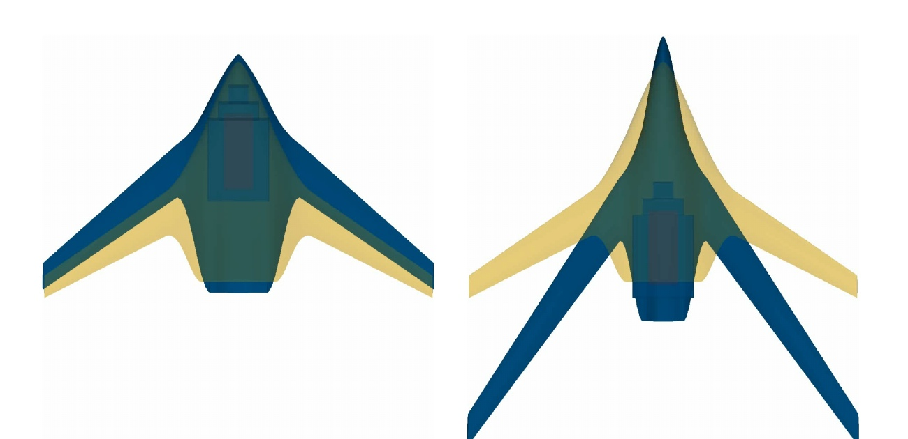
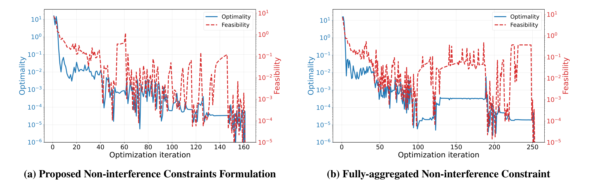
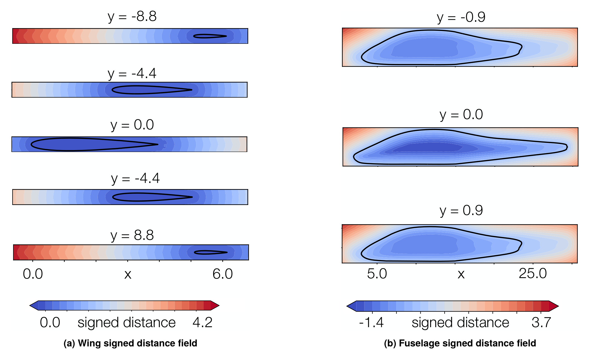

Efficient enforcement of geometric non-interference constraints
- Context
- Physically feasible configurations require components to remain inside enclosures and clear of one another as their shapes and positions change.
- Gap
- Discretized clearance conditions produce many constraints, and aggregating them can impair conditioning.
- Research goal
- Develop differentiable non-interference constraints that remain efficient as component count and geometric complexity increase.
Selected studies
ReferencesEnforcing component clearance with fewer constraints
Signed-distance fields and partial aggregation reduce constraint count while retaining minimum-clearance bounds between sampled boundary points. The box-packing and BWB multidisciplinary benchmarks converge faster than their fully aggregated formulations. Local aggregation lets boundary sampling be refined without increasing the number of optimization constraints.
Andrew H. Fletcher, Hollis A. Smith, John T. Hwang. Efficient and Robust Enforcement of Geometric Non-Interference Constraints for Large-Scale Multidisciplinary Design Optimization. AIAA AVIATION 2026 Forum, AIAA 2026-4501 (AFRL public release), 2026. Distribution Statement A: Approved for public release; distribution is unlimited. PA# AFRL-2026-2044
@inproceedings{fletcher2026efficient,
author = {Andrew H. Fletcher and Hollis A. Smith and John T. Hwang},
title = {Efficient and Robust Enforcement of Geometric Non-Interference Constraints for Large-Scale Multidisciplinary Design Optimization},
booktitle = {AIAA AVIATION 2026 Forum, AIAA 2026-4501 (AFRL public release)},
year = {2026},
note = {Metadata verification: Crossref unavailable: HTTPError}
}



Representing component boundaries with differentiable distance fields
Compactly supported radial basis functions combine a background distance field with a local correction, refined where residual errors remain large. Wing and fuselage tests demonstrate accurate boundary reconstruction and inexpensive field evaluation, although the wing's sharp trailing edge remains difficult to resolve.
Marius L. Ruh, John T. Hwang. Differentiable Signed Distance Function Surrogates for Multidisciplinary Design Optimization Using Radial Basis Functions. ASME IDETC/CIE 2026 · DETC2026-194018, 2026.


References
- Andrew H. Fletcher, Hollis A. Smith, John T. Hwang. Efficient and Robust Enforcement of Geometric Non-Interference Constraints for Large-Scale Multidisciplinary Design Optimization. AIAA AVIATION 2026 Forum, AIAA 2026-4501 (AFRL public release), 2026. Distribution Statement A: Approved for public release; distribution is unlimited. PA# AFRL-2026-2044PDF
@inproceedings{fletcher2026efficient, author = {Andrew H. Fletcher and Hollis A. Smith and John T. Hwang}, title = {Efficient and Robust Enforcement of Geometric Non-Interference Constraints for Large-Scale Multidisciplinary Design Optimization}, booktitle = {AIAA AVIATION 2026 Forum, AIAA 2026-4501 (AFRL public release)}, year = {2026}, note = {Metadata verification: Crossref unavailable: HTTPError} } - Marius L. Ruh, John T. Hwang. Differentiable Signed Distance Function Surrogates for Multidisciplinary Design Optimization Using Radial Basis Functions. ASME IDETC/CIE 2026 · DETC2026-194018, 2026. Manuscript
Research connections